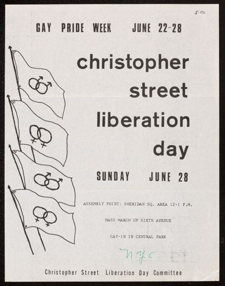
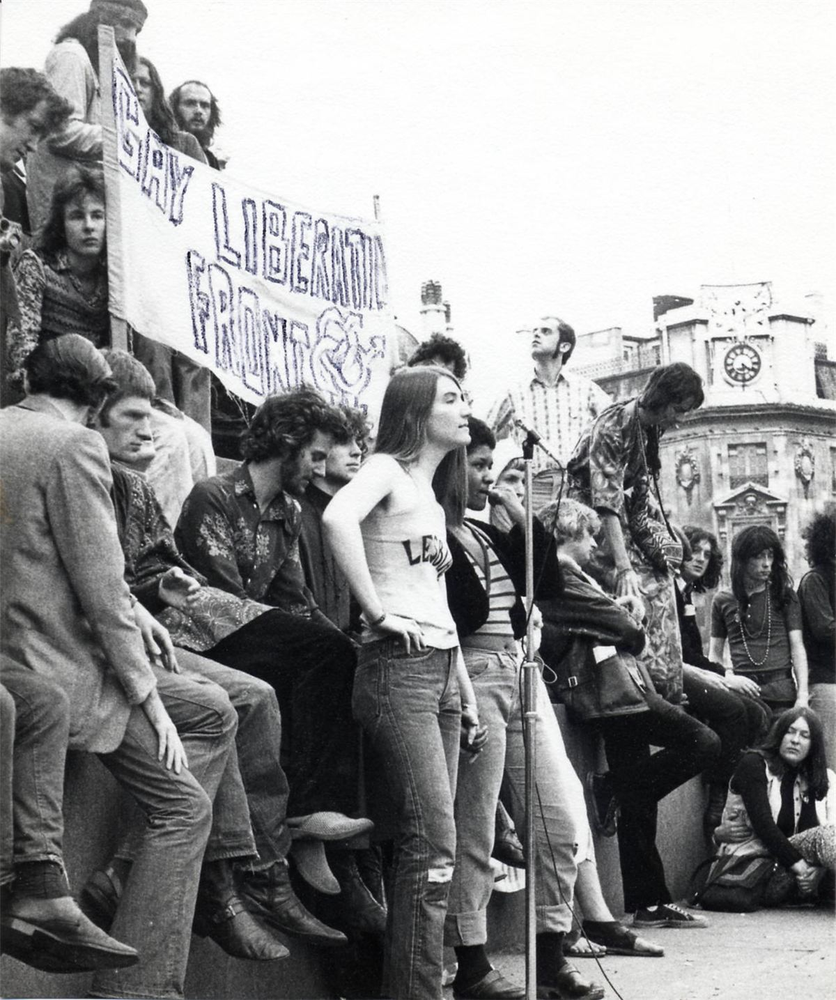

Dans la jeunesse de Mamie, aimer quelqu'un du même sexe, c'était risquer la prison, l'asile, le licenciement, la rue. On se cachait. Et puis, en deux ans, tout a basculé : les homosexuels ont cessé de demander pardon et ont commencé à se battre, à New York d'abord, puis à Paris, dans la foulée de Mai 68.
New York, 28 juin 1969 : Stonewall
À New York, à la fin des années 1960, il est interdit de servir de l'alcool aux homosexuels, de danser entre hommes ou de porter des vêtements de l'autre sexe. Les descentes de police dans les bars sont fréquentes. Le Stonewall Inn, à Greenwich Village, est tenu par la mafia, qui paie la police. On y trouve des gays, des lesbiennes, des femmes trans noires et portoricaines, des jeunes à la rue.
Dans la nuit du 28 juin 1969, la police fait une descente. Cette fois, la foule ne se disperse pas. Les arrestations brutales déclenchent une révolte : pièces de monnaie, bouteilles, briques. Environ 2 000 personnes font face à 400 policiers. Les affrontements durent plusieurs nuits. Marsha P. Johnson, une femme trans noire, fait partie des personnes qui ont résisté.
Dans les semaines qui suivent naît le Gay Liberation Front, qui se veut révolutionnaire, anticapitaliste et antiraciste. Le 28 juin 1970, des milliers de personnes défilent à New York pour l'anniversaire : c'est la première marche des fiertés.

En France : un « fléau social »
En France, l'homosexualité n'est plus un crime depuis la Révolution, mais l'État la réprime autrement. En 1960, un amendement la classe parmi les « fléaux sociaux », aux côtés de l'alcoolisme et de la prostitution. La majorité sexuelle est plus élevée pour les relations homosexuelles. La seule association, Arcadie, prône la discrétion et la respectabilité.
Paris, 1971 : le FHAR
Le 10 mars 1971, à la salle Pleyel, l'animatrice Ménie Grégoire enregistre une émission de radio en public intitulée « L'homosexualité, ce douloureux problème ». Des lesbiennes et des homosexuels envahissent la scène et interrompent l'émission : « Ce n'est pas un problème, c'est une lutte ! » C'est l'acte de naissance du Front homosexuel d'action révolutionnaire (FHAR).
- On y croise l'écrivaine féministe Françoise d'Eaubonne, le jeune Guy Hocquenghem, et le vieux militant anarchiste et anticolonialiste Daniel Guérin, qui lie depuis longtemps libération sexuelle et révolution sociale.
- Le 23 avril 1971, le numéro 12 du journal Tout !, consacré à « la libre disposition de notre corps », donne la parole au FHAR. Il est saisi, et son directeur de publication, Jean-Paul Sartre, poursuivi.
- Le 1er mai 1971, le FHAR défile dans la manifestation syndicale. Des homosexuels manifestent à visage découvert, sous leur propre banderole, pour la première fois en Europe. Les services d'ordre de la gauche ne savent pas quoi en faire.

Un front sans chef
Le FHAR n'a ni bureau, ni adhérents, ni porte-parole. Il se réunit chaque semaine en assemblée générale à l'École des beaux-arts de Paris, où des centaines de personnes se pressent. On y parle de désir, de corps, de révolution, de la famille, de la police, dans un joyeux chaos. Des groupes naissent un peu partout en France.
Très vite, les lesbiennes, minoritaires et lassées du machisme de certains garçons, s'organisent entre elles : ce sont les Gouines rouges, proches du Mouvement de libération des femmes. D'autres groupes se forment, comme les Gazolines, des folles et des travestis provocateurs.
La fin
Divisé, critiqué par les partis de gauche et d'extrême gauche qui voient l'homosexualité comme une « déviance bourgeoise », et harcelé par la police, le FHAR s'épuise. En février 1974, la police interdit ses réunions aux Beaux-Arts, et le mouvement disparaît. D'autres prennent le relais : les Groupes de libération homosexuelle (GLH), le journal Gai Pied. L'homosexualité est retirée du code pénal en 1982.
Chronologie
- 1960En France, l'homosexualité classée « fléau social ».
- 28 juin 1969Émeutes de Stonewall à New York.
- 28 juin 1970Première marche des fiertés à New York.
- 10 mars 1971Le FHAR interrompt l'émission de Ménie Grégoire.
- 23 avril 1971Saisie du n° 12 de Tout !
- 1er mai 1971Le FHAR défile dans la manifestation syndicale.
- Février 1974Interdiction des réunions aux Beaux-Arts, fin du FHAR.
- 1982Fin des discriminations pénales contre l'homosexualité en France.
Dans ce dossier
- Révolution du désir et récupération : ce que les libertaires en retiennent.
Sources et pour aller plus loin
Lire
- Le Désir homosexuel, Guy Hocquenghem, 1972.Le texte théorique né du FHAR.
- Homosexualité et révolution, Daniel Guérin, Le Vent du ch'min, 1983.Un anarchiste qui a lié toute sa vie libération sexuelle et révolution.
Sur le web
- Le FHAR sur WikipédiaChronologie et héritage.
- Les émeutes de StonewallLa nuit qui a tout changé.
- Les Gouines rougesLes lesbiennes féministes de 1971.
Dossier rédigé par la bande à Mamie à partir de travaux d'historiennes et d'historiens et de textes des mouvements concernés. Libre de reproduction.